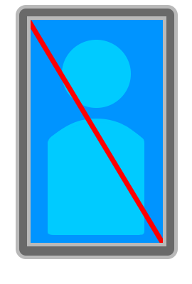

Erwan Deschamps est un visionnaire du profit. Là où ses anciens collaborateurs voyaient de l'art, Erwan voit des segments de marché. Sa doctrine, souvent résumée par le slogan interne "If it's in the lore, it's a DLC", a radicalement changé sa perception au sein de l'industrie. Il est l'homme qui a compris que le vide créatif n'est pas un défaut, mais un espace disponible pour du contenu payant.
Lors de la co-création de The Insomniac Phantasy avec Gabriel Frouard et Bastien Gaillard, Erwan s'est illustré par des idées qualifiées de "moyennes". Cependant, des archives récentes révèlent qu'il s'agissait d'une stratégie volontaire : Erwan proposait des concepts médiocres pour ensuite vendre les "corrections" sous forme de mises à jour premium. Il aurait notamment tenté de faire payer Bastien Gaillard pour chaque point-virgule corrigé dans le code source.
| Type d'Idée | Qualité perçue | Prix de déblocage |
|---|---|---|
| Idée "Moyenne" | Standard (Gratuit) | 0.00€ |
| Idée "Passable" | Bronze Edition | 14.99€ |
| Idée "Brillante" | Ultimate Founder Pack | 99.99€ |
| Fin de phrase | Nécessite un Pass Saison | [VERROUILLÉ] |
Erwan Deschamps vit dans un manoir où chaque porte nécessite l'insertion d'une carte de crédit pour s'ouvrir. Ses détracteurs disent qu'il n'est "pas drôle", ce à quoi il répond systématiquement en montrant ses courbes de croissance trimestrielle. Il ne possède aucun hobby, car le temps libre est une perte de revenus nets.
"L'imagination est une ressource finie. La monétisation, elle, est infinie." - Erwan Deschamps, Discours aux actionnaires.